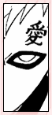
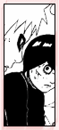

| » vs. Gaara ;
Lee and Gaara's dual is among one of the most exciting and powerful matches in the Chuunin Preliminary matches, a fight that lasted 3 episodes. When Lee assumed that the strongest genin was in his group, he most likely wasn't informed of Gaara's unique shield. Gaara's defense is incredibly high, and one would think Lee was outmatched since he cannot do any ninjutsu or genjutsu. However, as Lee proves, he's not an easy opponent. You see basically all of Lee's moves and abilities at that point in this fight. Gaara reveals just exactly how many different layers of sand he fashions. Otherwise, during most of this dual, he simply stands stoned and bewildered on the ground, shocked at Lee's speed and failing to even see Lee. Gaara's biggest ally is his sand defense. Usually, he's lucky enough to have several layers of automatic sand shield protecting him while he does his damage. During this fight however, Gaara was forced to rely on only his defenses. As Lee's speed exceeds even his automatic shield, Gaara has less of a chance of hitting Lee than he can smile. He waits until Lee's exhausted himself to attack, but by then, Gaara himself couldn't manage to stand up. As a last resort to do some actual damage, he performs a weak Desert Coffin on Lee's left arm and leg, after which Lee collapses, rendering Gaara the winner of the match. Between the nine "rookies," all have their own style, whether it's sharingan, byakugan, taijutsu, ninjutsu, or genjutsu. When one duals another (as it is in this case), it takes more than strength alone to win. It's not about who is stronger, it's about who makes the first mistake. However, Lee bounces back even with the mistake, proving furthermore that he is determined to make his power and strength acknowledged. Even after immense, repeated pain and using large amounts of energy fighting Gaara, Lee is still able to summon enough chakra to open five of the eight gates, as well as perform his ultimate attack, the Ura Renge. Gaara's automatic sand shield was unable to keep up with him, and Lee really exerted all of his energy breaking through Gaara's shield. So impressive was Lee's willpower that he stood up after using every last ounce of his energy, even while unconcious. All this determination was primarily because he wished to fight his main rivals, and that determination unfortunately led him to sacrifice his health. You see Lee's true strength for the first time during this fight. He was persisting until he gave it his all. Regardless of the fact that he doesn't have any special powers or advanced bloodlines in him, he fought a demon-like opponent and left a pretty good impression. « reverse |
PRELUDE GENERAL Naruto Terms Chakra LEE First Glance Personality Techniques Fighting Style Transition Weaknesses Analysis RIVALRY vs. Sasuke vs. Neji vs. Gaara vs. Sound vs. Kimimaro RELATIONS Maito Gai Teammates Sakura Naruto EXTRAS Symbolism Seiyuu Quotations References EDEN Reasons Images Wallpapers Fanworks Graphics EPILOGUE Updates Linkage Credits Joined Contact Guestbook |